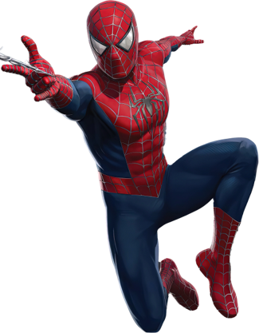

-
Tom Holland
2017 ⭐
Descrição
Esta trilogia do Homem Aranha, interpretada pelo Tom Holland, não apenas proporciona uma narrativa repleta de ação e efeitos visuais impressionantes, mas também oferece uma visão profunda da jornada de Peter Parker, desde um estudante do ensino médio até um herói amadurecido, mostrando seu desenvolvimento como pessoa e super-herói ao longo do tempo.
-
Andrew Garfield
2012 ⭐
Descrição
A série 'O Espetacular Homem-Aranha', estrelada por Andrew Garfield, consistiu em dois filmes que foram elogiados pelas performances de Andrew Garfield como Peter Parker, bem como pela química entre Andrew e Emma Stone, que interpretou Gwen Stacy. As cenas de ação, efeitos visuais e narrativa emocional também foram amplamente elogiados.
-
Tobey Maguire
2002 ⭐
Descrição
A trilogia original do Homem-Aranha, estrelada por Tobey Maguire, foi uma das primeiras adaptações cinematográficas de quadrinhos que capturou o coração dos fãs e críticos. Esses filmes foram elogiadas por sua narrativa emocional, personagens bem desenvolvidos e performances sólidas.
-
Peter Parker | PS4
2018 ⭐
Descrição
A trilogia do Homem-Aranha do PS4 é uma série de jogos de ação e aventura que segue as aventuras do Homem-Aranha em um mundo de jogo de mundo aberto em Nova York. Elogiados por sua jogabilidade envolvente, narrativa emocionante e fidelidade ao universo do Homem-Aranha, proporcionam uma experiência imersiva aos jogadores.